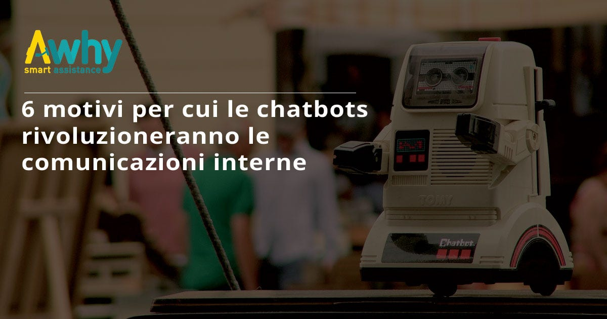
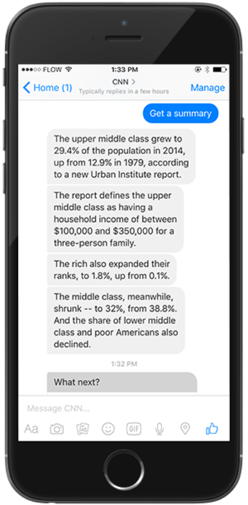

6 motivi per cui le chatbots rivoluzioneranno le comunicazioni interne

Le chatbots determineranno un forte cambiamento anche nella gestione delle comunicazioni interne degli enti sia pubblici che privati.
Nel corso dei prossimi decenni la maggior parte delle comunicazioni interne cartacee utilizzate nelle scuole, negli uffici e in qualunque altra struttura pubblica o privata, verranno sostituite da quelle elettroniche.
In alcuni casi si prediligerà l’invio delle email, in altri l’utilizzo della rete intranet ma, in entrambi i casi, c’è il rischio che questi messaggi non ricevano la stessa attenzione dei loro antenati cartacei.
Secondo la ricerca fatta dal Radicati Group , un dipendente riceve in media 88 email al giorno e per alcune aziende questa cifra aumenta addirittura del 20%.
Il problema del ricevere un così alto numero di email è relativo alla possibilità che ha il ricevente di stabilire quanto sia effettivamente importante la singola mail in un flusso così nutrito: è infatti probabile che, in questa situazione, una email venga smarrita tra le altre, non arrivando nemmeno ad essere aperta dal destinatario.
Nel tentativo di ridurre le email, molte aziende si sono attrezzate per spostare i flussi di comunicazione sulla rete intranet. Tuttavia la maggior parte delle reti intranet non sono abbastanza efficienti per la risoluzione delle situazioni critiche che possono presentarsi ai dipendenti quotidianamente.
Ciò avviene perché, a meno che non si tratti di situazioni di emergenza, è possibile che i dipendenti non accedano a questa rete per giorni, fino al punto in cui non gli è necessario farlo ma non rendendosi disponibili per eventuali risposte da fornire ai loro colleghi.
I social network aziendali sono spesso utilizzati per ovviare al problema delle email: tenere il passo con gli aggiornamenti di Slack o Yammer è possibile se si ha un team di lavoro molto ristretto, di 15 o 20 membri al massimo, ma questi strumenti non possono funzionare come mezzo di comunicazione con un’azienda da centinaia di dipendenti perché diverrebbe impossibile essere costantemente aggiornati sulle comunicazioni scritte da tutti gli utenti.
Perché le chatbots possono fare la differenza?
Partiamo dal principio: la chatbot è un software che comunica con gli utenti tramite servizi di messaggistica istantanea, quali quelle presenti su Facebook, Skype o altre piattaforme di comunicazione.
La caratteristica delle chat dotate di bot di assistenza è quella di definirsi sia come strumento di comunicazione tra di individui che, allo stesso tempo, come strumento di promemoria.
Ma quali sono i motivi principali per cui le chat dovrebbero subentrare all’utilizzo delle email e della rete intranet nelle comunicazioni aziendali?
1.Tutti i dipendenti sanno come utilizzare le applicazioni di messaggistica.
Le prime 4 applicazioni di messaggistica più utilizzate hanno più di 3 miliardi di utenti mensili attivi. Avete letto bene, 3 miliardi, il che vuol dire più degli utenti di Facebook, YouTube, Twitter e Linkedin combinati. È persino più del numero di utenti che utilizzano la posta elettronica a livello mondiale.
2. Le chatbots possono raggiungere anche i dipendenti che non hanno accesso alle email o al compuer.
Vi è stata una lotta portata avanti per anni per far si che la comunicazione si digitalizzasse in cinque settori specifici: sanitario, alberghiero, industriale, logistico e di vendita al dettaglio. La maggior parte dei lavoratori di questi settori, infatti, non ha tempo né modo di sedersi al computer e leggere le mail.
Il cambiamento epocale si è verificato quasi interamente negli ultimi tre anni: è infatti in quest’arco di tempo che gli smartphone si sono diffusi in proporzioni incredibili.
3. Le chatbots sono strumenti di comunicazione sia interna che esterna.
Le chatbots possono fare da veicolo per comunicazioni sia esterne che interne. Ad esempio, i dipendenti possono richiedere dei messaggi predefiniti su richiesta inserendo semplici comandi come “attività del giorno” o “appuntamenti della settimana” e la chatbot sarà in grado di fornire l’elenco di attività di riferimento.
Questa flessibilità permette di rispondere all’esigenza di ottenere comunicazioni che siano indipendenti dall’intervento di terzi, veloci e altamente funzionali.
4. Velocità di lettura.
I messaggi inviati tramite chatbot sono facili da leggere, brevi e concisi. Questo tipo di comunicazione, semplicemente, non supporta la prolissità e costringe ad esprimersi in modo sintetico.
5.Velocità di scrittura.
I messaggi brevi non sono solo più facili da leggere, ma ovviamente anche da scrivere. Ogni qual volta si deve scrivere un articolo per un blog, ciò richiede tempo e un notevole sforzo mentale. Una chat non richiede nulla di simile: si tratta spesso di una singola frase o di poche parole che comunichino solo quanto è strettamente necessario.
Da questo punto di vista è molto interessante il funzionamento della chatbot della CNN: questa è, infatti, in grado di condensare articoli lunghissimi in un massimo di 50 battute.

6. Non sono necessari procedimenti d’accesso.
Per accedere alla rete Intranet di un’azienda, il dipendente deve inizialmente installare un software VPN, richiedere l’accesso a quel software, ottenere un ID, registrare il proprio telefono cellulare, digitare un codice di autorizzazione e, una volta avviato il browser, inserire l’indirizzo web di riferimento.
Riuscite ad immaginare quanto tempo un dipendente possa perdere nel compiere tutti questi passaggi semplicemente per controllare se ci sono nuovi messaggi di comunicazione interna?
A differenza di una rete intranet non vi è alcuna necessità di effettuare un login per usare una chatbot. I servizi di messaggistica sanno chi sei e con chi condividi le tue informazione. Non serve fare nulla di aggiuntivo al lanciare l’app stessa per leggere i messaggi ricevuti ed inviarne di nuovi.
Queste sono le semplici ragioni per le quali il modo con cui avverranno le comunicazioni nel mondo del lavoro potranno finalmente cambiare.
E voi siete al passo con il cambiamento?
Roberta Gallo